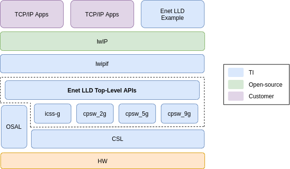
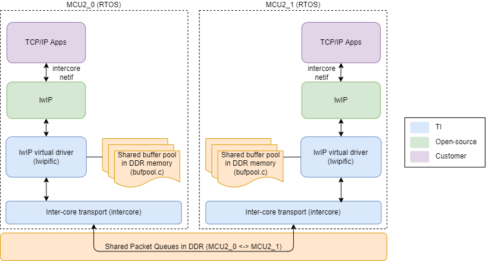
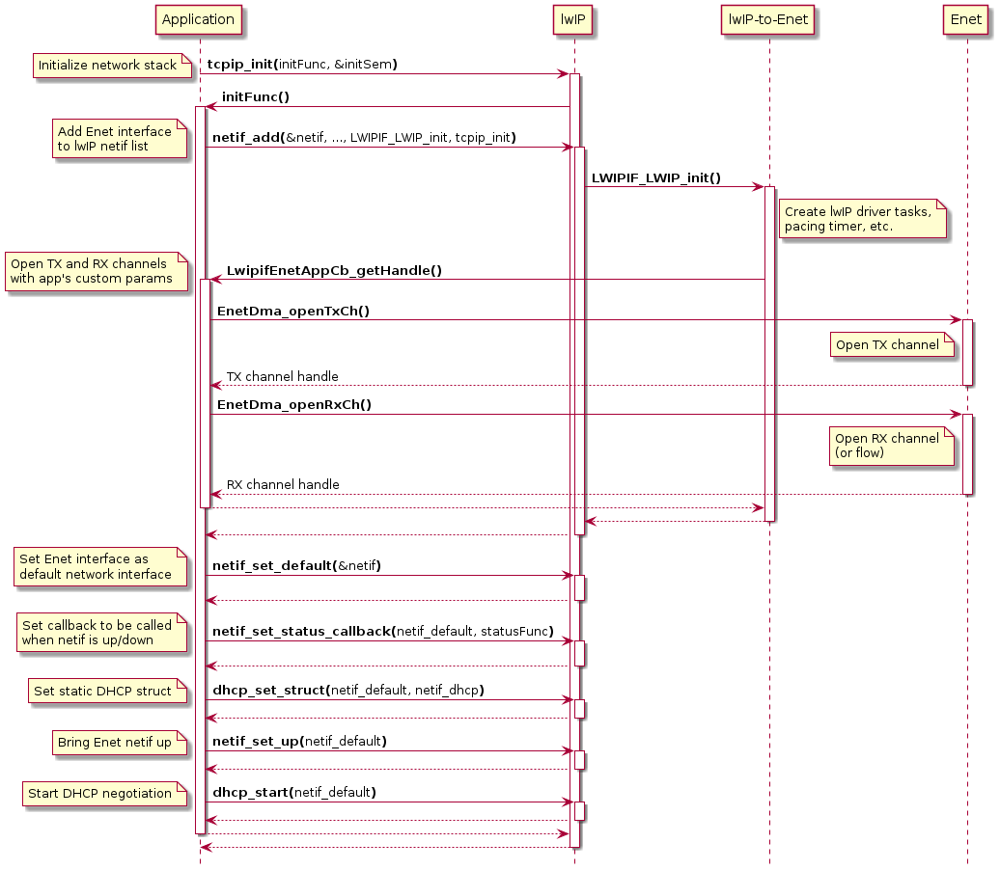

4.7.3.1. lwIP User’s Guide¶
This lwIP User’s Guide document is organized as follows:
Section 1 “lwIP Introduction and SDK Introduction” provides an overview of the lwIP stack and how it has been integrated into TI SDK.
Section 2 “lwIP Porting” covers the porting steps.
And finally, section 3 “Migration Guide” provides a comparison of lwIP with respect to NDK for customers that are migrating from NDK stack supported in previous SDK releases.
4.7.3.1.1. lwIP Introduction and SDK Integration¶
LwIP is a free TCP/IP stack developed by Adam Dunkels at the Swedish Institute of Computer Science (SICS) and licensed under a modified BSD license (completely open-source).
lwIP enables full-fledge TCP/IP stack implementation on embedded systems while consuming minimal system resources, including overall memory footprint for the stack.
Core part of the lwIP stack is the IP (dual stack implementation for IPv4/IPv6) layer along with configurable user selection of TCP, UDP, DHCP, and many other protocols.
The list below summarizes some of the key feaures supported by lwIP stack.
IPv4 and IPv6 (Internet Protocol v4 and v6)
ICMP (Internet Control Message Protocol) for network maintenance and debugging
IGMP (Internet Group Management Protocol) for multicast traffic management
UDP (User Datagram Protocol)
TCP (Transmission Control Protocol)
DNS (Domain Name Server)
SNMP (Simple Network Management Protocol)
DHCP (Dynamic Host Configuration Protocol)
PPP (Point to Point Protocol)
ARP (Address Resolution Protocol)
The latest release versions of lwIP and lwIP contrib at the time of this writing have been integrated into PDK, that is, lwip v2.1.2 and lwIP-contrib v2.1.0. Core portions of the lwIP stack are reused as is without any modifications. Main additions from TI include driver for CPSW, ICSS-G peripherals built on Enet LLD API.
4.7.3.1.1.1. Enet LLD-based lwIP Network Interface Driver¶
Enet LLD based lwIP network interface driver has been integrated into PDK starting in Processor SDK 8.0 release. This driver enables lwIP TCP/IP stack on FreeRTOS for CPSW peripherals (such as CPSW_2G, CPSW_5G and CPSW_9G) and ICSSG MAC peripheral.
lwIP network interface driver plays an equivalent role to the NIMU adaptation layer in TI NDK stack, so often times in this document, lwIP network interface driver will be referred to as lwIP adaptation layer to convey that similarity, as readers may be familiar with TI NDK stack supported in previous SDK releases.
The diagram below shows a layered view of the relevant components in the lwIP integration. The lwIP network interface driver (shown as lwipif in the digram) sits on top of Enet LLD, using Enet’s DMA APIs to build a lwIP network driver layer that acts as a glue between Enet LLD and stack, which seamlessly supports the Ethernet peripherals natively supported by Enet LLD.
As shown in the diagram, an Enet LLD example application is provided as part of the SDK.
This example application is based on lwIP contrib’s example located at
lwip-contrib/examples/example_app/test.c, so it enables lwIP contrib’s applications
such as TCP echo, UDP echo and lwIP iperf apps. The Enet LLD lwip example can be found at:
<pdk>/packages/ti/drv/enet/examples/enet_lwip_example.
4.7.3.1.1.2. Inter-core lwIP Virtual Network Interface Driver¶
Starting with SDK 8.1, the Enet LLD includes an inter-core virtual Ethernet driver. The virtual Ethernet driver uses a software based shared memory packet transport which is integrated with lwIP stack to allow TCP/IP communication between cores.
The diagram below shows a layered view of the inter-core virtual Ethernet driver. At the bottom is the inter-core layer which provides a shared memory based packet transport. This packet transport is implented using lock-less circular queues and requires no synchronization between the sender and receiver cores. A dedicated pair of TX and RX queues are used between each pair of particpating cores to provide a full duplex communication channel.
Sitting above the packet transport, the inter-core lwIP interface layer (shown as lwipific in the digram) acts as the adaptation layer between the lwIP stack and the shared memory packet transport. This adaptation layer implements the primitives needed by the inter-core lwIP network interface (netif) to send and receive Ethernet packets using the shared memory transport.
Finally, the lwIP stack sits on top of the lwIP interface layer and allows cores to use standard TCP/IP protocols to communicate with each other without using the CPSW_nG switch.
4.7.3.1.1.3. Directory Structure¶
4.7.3.1.1.3.1. lwIP stack and contrib¶
lwIP stack and contrib are integrated into PDK as is from the lwIP public repository, refer to lwIP Git repository page for more information.
lwIP and lwIP contrib are placed into PDK’s transport directory, along with makefiles to integrate them into PDK build system. The directory structure is shown below:
packages/ti/transport/lwip/ ├── lwip_component.mk <= Component makefile needed for PDK build system ├── lwip-contrib <= lwip/lwip-contrib git project │ ├── addons │ ├── apps │ ├── Coverity │ ├── examples │ ├── Filelists.cmake │ ├── Filelists.mk │ ├── lib │ └── ports ├── lwip-stack <= lwip git project │ ├── CHANGELOG │ ├── CMakeLists.txt │ ├── COPYING │ ├── doc │ ├── FEATURES │ ├── FILES │ ├── lib │ ├── README │ ├── src │ ├── test │ └── UPGRADING ├── makefile_contrib <= Makefile to compile lwip-contrib in PDK └── makefile_stack <= Makefile to compile lwip in PDK
4.7.3.1.1.3.2. Enet-based lwIP Ethernet Interface Driver¶
The Enet lwIP Ethernet driver, shown in the directory tree below as lwipif directory, provides the adaptation layer between lwIP stack and Enet LLD. This adaptation layer implements the operations needed by lwIP network interface (netif) to send and receive packets using public Enet LLD APIs.
The relevant files of the Enet LLD based lwIP Ethernet driver are shown below:
packages/ti/drv/enet/lwipif/ ├── inc <= Enet lwIP header files │ ├── default_netif.h <= Default interface header file │ ├── lwip2enet.h │ ├── lwip2lwipif.h │ ├── lwipif2enet_appif.h <= Application interface header file │ └── pbufQ.h ├── makefile <= lwIP driver makefile ├── ports │ ├── freertos <= FreeRTOS port directory │ │ ├── include │ │ │ ├── arch │ │ │ │ ├── cc.h │ │ │ │ ├── perf.h │ │ │ │ └── sys_arch.h │ │ │ ├── lwipopts.h <= lwIP configuration file │ │ │ └── lwippools.h <= lwIP buffer pool configuration file │ │ └── sys_arch.c │ └── tirtos <= TI-RTOS port directory (not applicable for J721E/J7200/AM65xx) │ ├── include │ │ ├── arch │ │ │ ├── cc.h │ │ │ ├── perf.h │ │ │ └── sys_arch.h │ │ ├── lwipopts.h │ │ └── lwippools.h │ └── sys_arch.c └── src <= lwIP driver source files ├── default_netif.c <= lwIP default interface ├── lwip2enet.c <= lwIP to Enet adaptation ├── lwip2lwipif.c <= lwIP netif base functions ├── lwip2lwipif_priv.h └── pbufQ.c
4.7.3.1.1.3.3. Inter-core Virtual Ethernet Driver¶
The directory structure of the Inter-core lwIP virtual Ethernet driver is given below:
packages/ti/drv/enet/intercore/ ├── include <= Inter-core transport header files │ ├── ic_ipc.h <= Inter-core IPC functions │ ├── ic_queue.h │ └── ic_queue_data.h <= Shared packet queues ├── src <= Inter-core transport source files │ ├── ic_queue.c │ └── ic_queue_data.c <= Shared packet queues ├── intercore.h <= Inter-core transport interface header └── makefile <= Inter-core transport makefilepackages/ti/drv/enet/lwipific/ ├── inc <= Inter-core Ethernet lwIP header files │ ├── bufpool.h <= Shared buffer pool manager header │ ├── lwip2enet_ic.h │ ├── lwip2lwipif_ic.h │ └── netif_ic.h <= lwIP inter-core interface ├── src <= Inter-core transport source files │ ├── bufpool.c <= Shared buffer pool manager functions │ ├── lwip2enet_ic.c │ ├── lwip2lwipif_ic.c │ └── netif_ic.c <= lwIP inter-core interface └── makefile <= Inter-core lwIP driver makefile
4.7.3.1.1.4. PHY Management¶
Enet LLD supports independent PHY drivers, which gives the ability to enable different PHY models in the same system and/or configure them with different parameters (i.e. auto-negotiation or manual mode, auto-negotiation advertise capabilities, etc).
Each PHY has its own state machine in the driver in order to handle the lifecycle of each
Ethernet PHY independently. The state machine runs every time that the application calls
Enet_periodicTick() function. Application can query the link status of any PHY using
ENET_PER_IOCTL_IS_PORT_LINK_UP IOCTL command. Please refer to the Ethernet PHY
Integration Guide in PDK API Guide for further information about Enet LLD PHY.
The PHY configuration is not in the scope of the lwIP driver, but the link status query is.
Enet LLD provides a hook for application to register the function that lwIP-to-Enet layer
should call periodically to query for link status: LwipifEnetAppIf_IsPhyLinkedCbFxn.
This allows Enet lwIP driver to remain agnostic of PHY specific status query mechanism.
4.7.3.1.2. lwIP Porting¶
4.7.3.1.2.1. FreeRTOS Port¶
TI SDK FreeRTOS port includes implementation of OS services abstraction layer (OSAL) which is used by most drivers.
lwIP needs basic OS services as outlined in the table below. For these, we leverage the lwIP contrib’s FreeRTOS binding for required OS services.
Enet LLD’s FreeRTOS port can be located at <pdk>/packages/ti/drv/enet/lwipif/ports/freertos/sys_arch.c.
The following table summarizes the mapping of lwIP port functions to FreeRTOS.
lwIP OSAL Function |
FreeRTOS Mapping |
|---|---|
‘Fast’ protect |
Recursive semaphore |
Mutex |
Recursive mutex |
Semaphore |
Binary semaphore |
Mailbox |
Queue |
Thread |
Task |
Note that lwIP is supported only on FreeRTOS.
4.7.3.1.2.2. Initialization Sequence¶
The sequence diagram below shows the most important functions involved during the initialization of the lwIP stack of an application that enables DHCP client.
The stack initialization begins when the application calls
tcpip_init()functions and passes an initialization function which lwIP will call once it’s done with the tcpip_thread initialization.The application must add the Enet LLD network interface to lwIP list of network interfaces (netifs in lwIP parlance) by calling
netif_add(), which takes the interface initialization function which is calledLWIPIF_LWIP_init()in Enet LLD.lwIP adaptation layer delegates the TX and RX DMA channel allocation and initialization to the application as the application is best fit to determine the intended channel and its parameters. This will be covered in the Opening DMA channels section.
The application can designate one of the registered network interfaces as the default network interface, this is then used by lwIP to route packets when the right interface cannot be found.
Note: For the sake of simplicity,
netif_add()andnetif_set_default()are shown as being explicitly called by the application in the initialization sequence diagram, but application can callinit_default_netif()which in turn will call those two functions internally, making Enet LLD-based interface as the default netif.
The application should register a function that will be called when interface is brought up or down via
netif_set_status_callback(). Application can use this callback to notify the user about the interface status change.Bring up the Enet LLD interface by calling
netif_set_up()with default netif pointer.Application can call
dhcp_start()to start the DHCP negotiation.
4.7.3.1.2.3. Opening DMA channels¶
The DMA channels opening process is delegated to the application in order to keep the lwIP adaptation layer agnostic of DMA-specific paramters, such as channel number or channel parameters (i.e. descriptor count, cache configuration, etc).
Applications using Enet LLD’s lwIP network driver must implement the following functions:
void LwipifEnetAppCb_getHandle(LwipifEnetAppIf_GetHandleInArgs *inArgs,
LwipifEnetAppIf_GetHandleOutArgs *outArgs)
void LwipifEnetAppCb_releaseHandle(LwipifEnetAppIf_ReleaseHandleInfo *releaseInfo)
lwIP adaptation layer will pass the intended number of packets to allocate, callback
function to be called when packet is received or transmitted, etc., via inArgs
of LwipifEnetAppCb_getHandle(). Application must open a TX and RX channel with
the requested parameters and return the channel handles via outArgs.
Similarly, when the adaptation layer is being shutdown, it will call
LwipifEnetAppCb_releaseHandle() which application must implement and close the
DMA channels opened in LwipifEnetAppCb_getHandle().
4.7.3.1.2.4. lwIP Configuration¶
4.7.3.1.2.4.1. lwIP Feature/Module Configuration¶
lwIP offers fully configurability of its features and modules via lwipopts.h header file, where users can override lwIP’s default configuration. In lwIP integration into Enet LLD, this file is placed under <pdk>/packages/ti/drv/enet/lwipif/ports/freertos/include/lwipopts.h. Enet LLD’s lwiptops.h enables UDP, IGMP, ICMP, DHCP, etc.
Feature |
Config Option |
Summary |
TI SDK
Default Configuration
Enabled (Y/N)
|
|---|---|---|---|
ARP |
LWIP_ARP |
ARP support - resolves next hop MAC address when transmitting and handle ARP requests received on configured network interface. |
Y |
IPv4 |
LWIP_IPV4 |
IPv4 support as per RFC 791, RFC 3344. |
Y |
IPv6 |
LWIP_IPV6 |
IPv6 support as per RFC 2460, 2461, 2462, 2464 (not a full list). |
N |
ICMP |
LWIP_ICMP |
ICMP handling of echo reply, destination reachability and TTL exceed conditions. |
Y |
IGMP |
LWIP_IGMP |
Group Management Protocol, versions 2 and 3. |
Y |
UDP |
LWIP_UDP LWIP_UDPLITE |
UDP (RFC 768) and UDP lite protocol support. |
Y |
TCP |
LWIP_TCP |
TCP protocol support. |
Y |
DHCP |
LWIP_DHCP |
DHCP client to dynamically obtain IP address from DHCP server. |
Y |
AUTOIP |
LWIP_AUTOIP |
Automatic dynamic IP address assignment without a server. |
N |
SNMP |
LWIP_SNMP |
SNMP with MIB-II support. |
Y |
DNS |
LWIP_DNS |
DNS client to resolve host name to address. |
Y |
Statistics |
LWIP_STATS LWIP_STATS_DISPLAY |
Statistics collection. |
Y |
Users may need to enable lwIP debug infrastructure to troubleshoot lwIP application issues.
This can be done by setting LWIP_DEBUG flag as follows:
#define LWIP_DEBUG 1
Also, user has to enable the debug flags of the stack features of interest by setting the
correspondig flag to LWIP_DBG_ON, for example:
#define MEM_DEBUG LWIP_DBG_ON
#define MEMP_DEBUG LWIP_DBG_ON
#define PBUF_DEBUG LWIP_DBG_ON
#define TCPIP_DEBUG LWIP_DBG_ON
#define NETIF_DEBUG LWIP_DBG_ON
Additionally, user may want to replace lwIP’s default print and assert functions with own functions, which can be done as follows:
diff --git a/lwipif/ports/freertos/include/arch/cc.h b/lwipif/ports/freertos/include/arch/cc.h
--- a/lwipif/ports/freertos/include/arch/cc.h
+++ b/lwipif/ports/freertos/include/arch/cc.h
@@ -34,6 +34,8 @@
/* std.h functions required */
#include <stdint.h>
+#include <stdio.h>
+#include <stdlib.h>
/* Define byte order of the system */
#define BYTE_ORDER LITTLE_ENDIAN
@@ -55,6 +57,21 @@
handler;}} while(0)
#endif
+#ifdef printf
+#undef printf
+#define printf EnetAppUtils_print
+#endif
+
+extern void EnetAppUtils_print(const char *pcString, ...);
+#define LWIP_PLATFORM_DIAG(x) do {EnetAppUtils_print x;} while(0)
+#define LWIP_PLATFORM_ASSERT(x) \
+ do { \
+ volatile static int gEnetAssertWaitInLoop = 1; \
+ EnetAppUtils_print("Assertion \"%s\" failed at line %d in %s\n", \
+ x, __LINE__, __FILE__); \
+ while (gEnetAssertWaitInLoop); \
+ } while(0)
+
struct sio_status_s;
typedef struct sio_status_s sio_status_t;
#define sio_fd_t sio_status_t*
4.7.3.1.2.4.2. Buffer Pools¶
Enet lwIP pool configuration defines 320 pbufs of MTU size, which is computed as follows:
PBUF_POOL_SIZE = LWIP2ENET_TX_PACKETS + ((2 * LWIP2ENET_RX_PACKETS) * n)
Considering 64 packets per channel and 2 RX channels (i.e. j721e):
PBUF_POOL_SIZE = 64 + ((2 * 64) * 2)
PBUF_POOL_SIZE = 320
Developers can change the buffer pool size by setting PBUF_POOL_SIZE in
<pdk>/packages/ti/drv/enet/lwipif/ports/freertos/include/lwipopts.h and fine tuning
the static pool allocation in
<pdk>/packages/ti/drv/enet/lwipif/ports/freertos/include/lwippools.h.
4.7.3.1.2.4.2.1. TX¶
The total packet buffer allocation for TX is LWIP2ENET_TX_PACKETS.
When the stack is ready to transmit an Ethernet frame via linkoutput(), the
lwIP-to-Enet layer increases the pbuf reference counter to prevent the pbuf from being
recycled and releases pbuf only when the hardware transmission is complete.
LWIP2ENET_TX_PACKETS should be large enough to account for holding the pbuf longer
while waiting for hardware transmission to complete in order to prevent lwIP stack
from running out of free buffers for transmission.
4.7.3.1.2.4.2.2. RX¶
The total packet buffer utilization for RX is 2 x LWIP2ENET_RX_PACKETS. At any given time, the Ethernet hardware will have LWIP2ENET_RX_PACKETS free buffers while the other LWIP2ENET_RX_PACKETS buffers will be either with the lwIP stack or the lwIP-to-Enet layer.
At init time, each RX channel (or flow) is primed with LWIP2ENET_RX_PACKETS buffers so that the driver and hardware have free buffers to place incoming Ethernet frames. lwIP-to-Enet layer maintains a local free buffer queue which is initialized with LWIP2ENET_RX_PACKETS buffers which will be used to replenish the driver with new buffers.
At runtime, lwIP-to-Enet layer will retrieve from the Enet driver the new packets when they arrive, and will feed the driver with the same amount of free buffers from its local free buffer queue. This ensures that the hardware doesn’t run out of free buffers for new packets.
4.7.3.1.2.5. Tasking Model¶
TI SDK implementation will support running lwIP in a multi-thread OS environment. This implies that the core stack will be run in an independent task context and other application threads interact with it through the stack API (Netconn, Socket API - refer details below).
With core part of the stack not being re-entrant, application should stick to using Netconn/Socket API. Mixed usage with RAW API though possible, would require carefully constructed protection mechanism and is best avoided for common usage.
As part of the stack initialization, a separate thread “tcp_ip_thread” is created and all stack handling of the packets is managed from this context.
In the final system, ensure that the priority of the tcp_ip_thread, application thread and driver thread for packet handling are set in accordance with use case requirements.
On possible approach is to assign priority as networking_app_thread > tcp_ip_thread > driver_thread, with the intent that if we are not able to keep with the packet rate, the packets are dropped in the HW/driver itself.
4.7.3.1.3. Migration Guide¶
TI SDK releases in the past have included support for NDK as the TCP/IP network stack. SDK releases starting SDK 8.0 release will be migrated to use lwIP as the networking stack.
This helps leverage the strong, mature, highly configurable feature set of lwIP - allowing completely scalability.
Applications written on top of NDK native API will require porting to run on top of lwIP stack.
Sections below provide quick comparison of the feature compatibility between the two network stack and also indicative mapping of Application API when migrating from NDK to lwIP.
4.7.3.1.3.1. lwIP vs NDK Feature Comparison¶
Feature |
NDK |
lwIP |
|---|---|---|
BSD socket interface |
Yes |
Yes |
Multiple select support |
Yes |
Yes |
Configurable activity timeout per socket |
Yes |
No |
Dual mode support (IPv4 / IPv6) |
Yes |
Yes |
Support IPv4 per RFC791 |
Yes |
Yes |
IP acquiring - DHCPv4 client, server |
Yes |
Yes |
IP acquiring - Static IP configuration |
Yes |
Yes |
DSCP |
No |
Yes |
IP fragmentation support |
Yes |
Yes |
Multicast addressing, IGMPv2 |
Yes |
Yes |
Support IPv6 per RFC 2460 |
Yes |
Yes |
DHCPv6 |
Yes |
Yes |
DAD (Duplicate Address Detection) |
Yes |
Yes |
MLDv1 |
Yes |
Yes |
NDP (Neighbor Discovery Protocol) |
Yes |
Yes |
ICMP Ping v4, v6 |
Yes |
Yes |
IPSEC |
No |
No |
Bridge between 2 NIs |
Yes |
Yes |
Layer 3 routing |
Yes |
Yes |
Internal ARP management |
Yes |
Yes |
ARP result caching |
Yes |
Yes |
L3 Raw socket support |
Yes |
Yes |
L4 Raw socket support |
No |
Yes |
TCP support |
Yes |
Yes |
UDP support |
Yes |
Yes |
SSL3.0, TLS1.0, TLS1.1, TLS1.2, TLS1.3 |
Yes (mbedTLS) |
Yes (mbedTLS) |
DNS: IPV4, IPv6 address resolution |
Yes |
Yes |
SNTP (Simple Network Time Protocol) |
Yes |
Yes |
Note
lwIP features listed are made available as is from public lwIP project. SDK configuration may only enable and exercise a subset of these features.
4.7.3.1.3.2. lwIP Application Interface¶
lwIP provides multiple Application Programming Interfaces as described in the table below.
Feature |
Config Option |
Summary |
Comments |
|---|---|---|---|
Raw API |
Realized through callback functions. Ideally suited for non-threaded application execution. |
|
|
Netconn API |
LWIP_NETCONN |
Sequential (blocking) model, can be used in multi-thread environment. |
|
Socket API |
LWIP_SOCKET |
BSD sockets like, POSIX compatible. |
|
For most part, applications are run in multi-threaded OS environment and are written to make use of BSD Socket like API.
NDK also includes support for BSD socket API and applications written for BSD socket API should be easily portable to lwIP.
lwIP supports BSD socket API (defined under posix/sys/socket.h), and socket API
mapping is summarized in the table below. In this section we will look specifically
at mapping for NDK native socket API to lwIP BSD socket interface.
Functionality |
NDK Socket API |
lwIP Socket API |
|---|---|---|
Accept a connection on a socket |
NDK_accept() |
accept() |
Bind a name to a socket |
NDK_bind() |
bind() |
Initiate a connection on a socket |
NDK_connect() |
connect() |
Return name (address) of connected peer |
NDK_getpeername() |
getpeername() |
Return the local name (address) of the socket |
NDK_getsockname() |
getsockname() |
Get the value of a socket option |
NDK_getsockopt() |
getsockopt() |
Listen for connection requests on a socket |
NDK_listen() |
listen() |
Receive data from a socket |
NDK_recv() |
recv() |
Receive data from a socket with the senders name (address) |
NDK_recvfrom() |
recvfrom() |
Receive Message API |
recvmsg() |
|
Send data to a connected socket |
NDK_send() |
send() |
Send data to a specified destination on an unconnected socket |
NDK_sendto() |
sendto() |
Set the value of a socket option |
NDK_setsockopt() |
setsockopt() |
Close one half of a socket connection |
NDK_shutdown() |
shutdown() |
Create a socket |
NDK_socket() |
socket() |
Select interface to concurrently poll on readiness of multiple sockets |
select() |
|
Poll interface to concurrently poll on readiness of multiple sockets |
poll() |